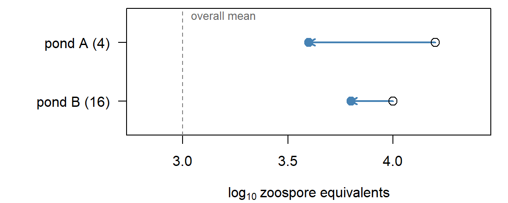
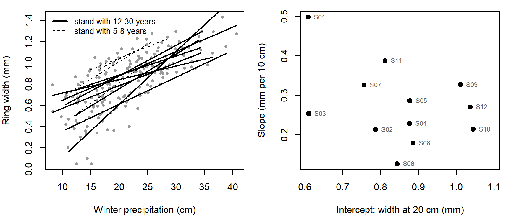
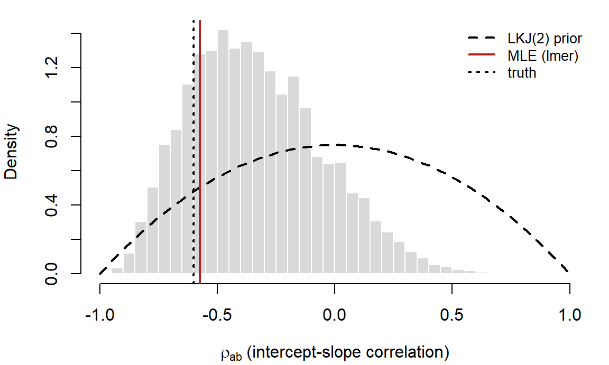
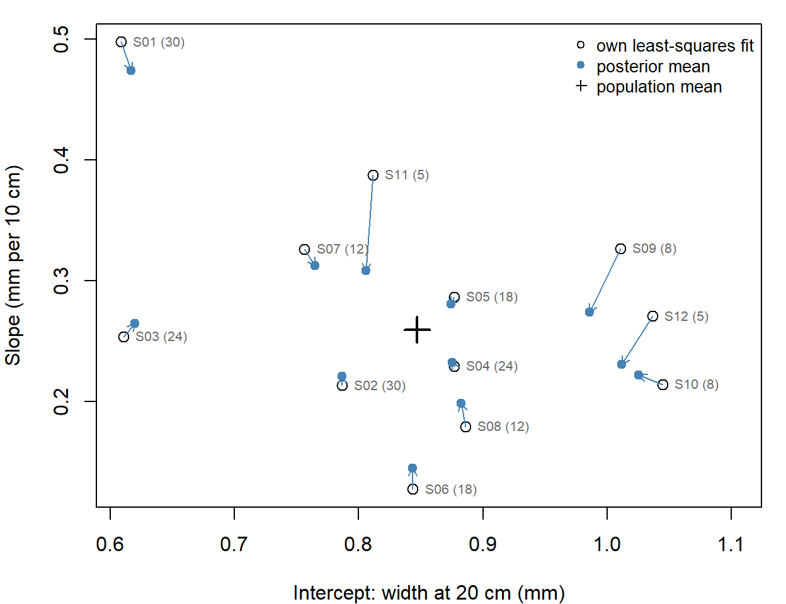
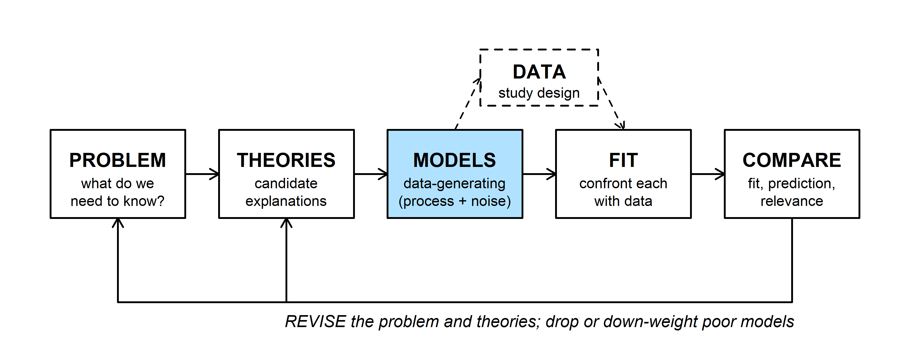
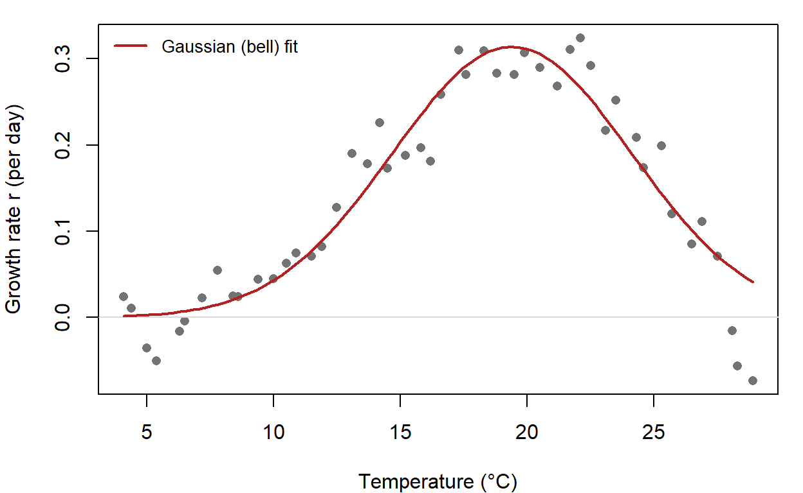
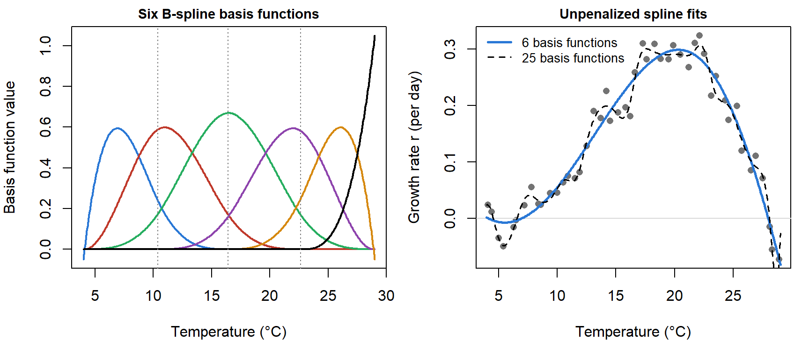
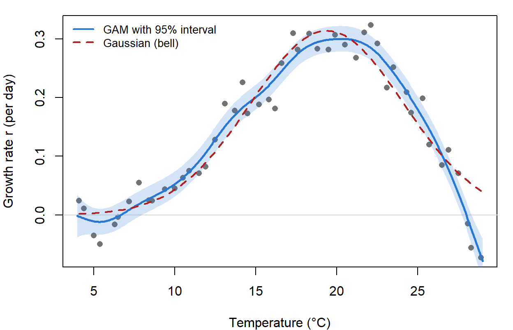
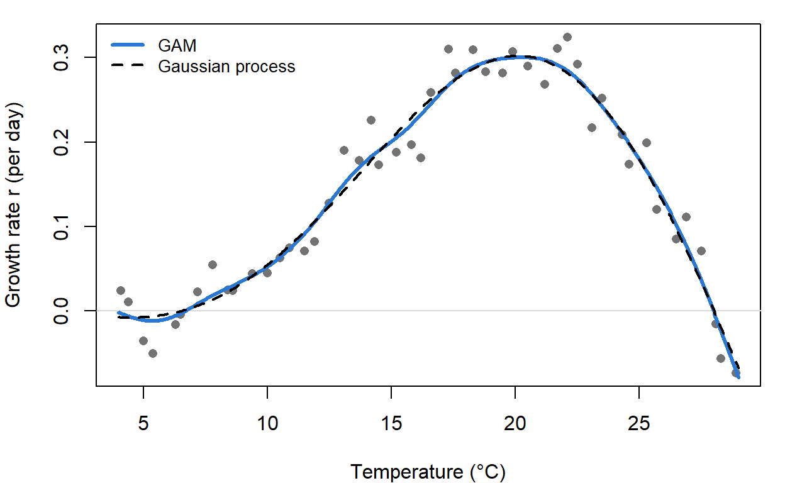

R code from this page is also in the companion script. Packages: mvtnorm, lme4, cmdstanr, posterior, brms, splines (comes with R), mgcv.
Last week we fit mixed models by maximum likelihood; this week we go Bayesian. This part defines what makes a model hierarchical, works through partial pooling (the main payoff of a hierarchical model), and then fits the drought random slope model by MCMC, first in Stan and then in one line of brms.
A hierarchical model is written in layers. The data are described conditional on some unobserved quantities, and those quantities are in turn drawn from a probability distribution whose parameters are estimated from the data. For the drought data used below (the random slope example):
Groups are only one kind of unobserved layer. In a spatial model it is a surface over the landscape, with nearby sites more alike than distant ones (a Gaussian process like the one in Gaussian processes, with distance in place of temperature). In capture-recapture and occupancy models it is each animal's or site's true state (alive or dead, occupied or not), with one process describing how the state changes (survival) and another describing what we see given the state (detection). What these models share is a model for the data given something we never observe directly, plus a model for that unobserved thing.
Every model with random effects is hierarchical ("multilevel" and "mixed" model mean the same thing). The stand intercepts and slopes do the same job in the data layer as a fixed intercept and slope, but they are treated as random draws from a population of stands rather than as separate unknown constants.
A prior on its own doesn't make a model hierarchical. Compare two Bayesian models for the drought slopes (leaving the intercepts aside). Both give each stand its own slope \(b_j\) in the data layer; they differ in where the prior on \(b_j\) comes from.
The data layer is the same in both models. The difference is who sets the prior's SD. In the first model we choose it (a large SD for a vague prior, a smaller one for a weakly informative prior). In the second, the data estimate it, and that estimate decides how strongly each stand is pulled toward the others.
One misconception that I had for a long time is that a hierarchical model had more than one probability distribution contributing to the likelihood. This isn't actually true: integrating out a layer can collapse the hierarchy into one distribution. For example, a Normal random intercept plus Normal noise gives a single multivariate Normal for all the observations (the block-diagonal \(V\)). Similarly, a Poisson count whose rate varies according to a gamma distribution gives the negative binomial. In both cases the model can be written in a layered (conditional) form, with the unobserved stand effects or rates, or in a collapsed (marginal) form, with those integrated out. For the same data the two give the same likelihood and the same estimates of the shared parameters.
So is the marginal form hierarchical? If it came from integrating out a layer, yes: it is the same model, written a different way. lmer() maximizes the marginal likelihood, and nobody would call a random intercept model fit with lmer() anything but hierarchical! The hierarchical structure is just folded into \(V\): the within-stand correlation is \(\sigma_a^2 / (\sigma_a^2 + \sigma_e^2)\), and \(\sigma_a\) is still the SD of the stand effects. What makes a model hierarchical is the claim behind it: that the data depend on unobserved quantities (stand effects, a spatial surface or "random field" (coming up in Week 14), true survival states) that have their own probability model.
Capture-recapture analysis (which I work with a lot!) works the same way: its usual likelihood sums over every alive-or-dead history an animal could have had, which is the discrete version of integrating out a layer.
The same likelihood can also come with a different claim. A multivariate Normal with equal correlations within stands, written directly as correlated errors (gls() with corCompSymm()), says nothing about stands differing and is usually called a marginal or correlated-errors model. A negative binomial fit simply as a convenient distribution for overdispersed counts is a one-layer model, even though the same likelihood could be read as a Poisson count with an unobserved, gamma-distributed rate.
In practice the layered form is usually worth writing down anyway: it says where the extra variation and correlation come from (stands really differ), and it is the only form that gives an estimate for each stand, which is what partial pooling needs.
The WOD (a short warm-up exercise) uses the estimate a random intercept model gives each group. For group \(j\), with \(n_j\) observations and mean \(\bar y_j\),
\[\hat a_j = \hat\mu + w_j(\bar y_j - \hat\mu), \qquad w_j = \frac{\sigma_a^2}{\sigma_a^2 + \sigma_e^2/n_j},\]
where \(\hat\mu\) is the overall mean, \(\sigma_a\) the SD among groups, and \(\sigma_e\) the SD within a group. The weight \(w_j\) compares the spread among groups with the sampling variance of the group's own mean. (The bonus derivation shows where this comes from.) The WOD applies it to the Batrachochytrium dendrobatidis (Bd) infection load in two ponds. Across many ponds the mean load is \(\hat\mu =\) 3 (log\(_{10}\) zoospore equivalents per swab), ponds differ with SD \(\sigma_a =\) 0.5, and frogs within a pond differ with SD \(\sigma_e =\) 1. Pond A had 4 frogs swabbed with mean load 4.2; pond B had 16 frogs with mean 4.

Pond A has the higher raw mean, but after pooling pond B has the higher estimate. Four frogs give a noisy pond mean (sampling variance 0.25, as large as the among-pond variance 0.25), so half of pond A's distance from the overall mean is treated as noise. Sixteen frogs earn pond B most of its own mean.
Two limits are worth checking. As \(n_j\) grows, \(w_j \to 1\) and the group keeps its own mean (no pooling). As \(\sigma_a \to 0\), \(w_j \to 0\) and every group gets the overall mean (complete pooling).
Pulling each group's estimate toward the overall mean like this is called shrinkage: the distance \(\bar y_j - \mu\) shrinks by the factor \(w_j\). Groups with little data shrink the most, because their own means are the noisiest. Extreme group means are partly luck, so shrinking them makes the estimates less variable and, averaged over groups, more accurate, at the cost of a little bias toward the mean. It's the same idea as the ridge and lasso penalties, which shrink coefficients toward zero. The difference is where the amount of shrinkage comes from: ridge regression chooses its penalty \(\lambda\) (often by cross-validation), while a random intercept model estimates \(\sigma_a\) from the data, and \(\sigma_a\) sets every \(w_j\) (see the ridge bonus).
To see partial pooling across many groups, we return to the simulated drought-sensitivity data from random slopes: ring widths at 12 pinyon stands whose records run from 5 to 30 years. Precipitation is in 10-cm units centered at 20 cm, so a stand's intercept is its ring width in a 20-cm winter and its slope is the change in width per extra 10 cm.
library(mvtnorm)
library(lme4)
set.seed(12)
n_years <- rep(c(30, 24, 18, 12, 8, 5), each = 2) # record length per stand
sd_true <- c(0.15, 0.10) # among-stand SDs: intercept, slope
rho_true <- -0.6
G_true <- diag(sd_true) %*% matrix(c(1, rho_true, rho_true, 1), 2) %*% diag(sd_true)
ab_true <- rmvnorm(12, c(0.9, 0.25), G_true) # each stand's intercept and slope
stand_names <- sprintf("S%02d", 1:12)
drought <- data.frame(stand = factor(rep(stand_names, n_years)),
year = unlist(lapply(n_years, function(n) seq(2021 - n, 2020))))
j <- as.integer(drought$stand)
drought$precip <- round(rgamma(nrow(drought), shape = 9, scale = 22 / 9), 1)
drought$precip10 <- (drought$precip - 20) / 10
drought$width <- round(ab_true[j, 1] + ab_true[j, 2] * drought$precip10 +
rnorm(nrow(drought), 0, 0.12), 2)
# no pooling: one least-squares line per stand; and the maximum likelihood random slope fit
nopool <- t(sapply(split(drought, drought$stand), function(s) coef(lm(width ~ precip10, data = s))))
fit_rs_lmer <- lmer(width ~ precip10 + (precip10 | stand), data = drought, REML = FALSE)
ml <- c(fixef(fit_rs_lmer), as.data.frame(VarCorr(fit_rs_lmer))$sdcor)
names(ml) <- c("mu_a", "mu_b", "sigma_a", "sigma_b", "rho_ab", "sigma_e")
round(ml, 3)## mu_a mu_b sigma_a sigma_b rho_ab sigma_e
## 0.840 0.258 0.131 0.092 -0.573 0.118
Left: one least-squares line per stand. Right: each stand's own intercept and slope, the "no pooling" estimates.
There are three ways to estimate each stand's mean ring width:
With partial pooling, each stand's mean ring width gets a prior that is built from all the other stands: it is centered on the overall mean, and its SD (\(\sigma_a\)) reflects how much stands differ from one another. The random slope model below does the same for each stand's slope.
Ignoring precipitation for the moment, here is the random intercept fit, checked against the formula:
fit_ri0 <- lmer(width ~ 1 + (1 | stand), data = drought, REML = FALSE)
sd_ri0 <- as.data.frame(VarCorr(fit_ri0))$sdcor # sigma_a, sigma_e
ybar <- tapply(drought$width, drought$stand, mean)
n_j <- as.vector(table(drought$stand))
w <- sd_ri0[1]^2 / (sd_ri0[1]^2 + sd_ri0[2]^2 / n_j)
round(cbind(own_mean = ybar, n_j, w, formula = fixef(fit_ri0) + w * (ybar - fixef(fit_ri0)),
lmer = coef(fit_ri0)$stand[, 1]), 3)## own_mean n_j w formula lmer
## S01 0.704 30 0.879 0.723 0.723
## S02 0.838 30 0.879 0.841 0.841
## S03 0.593 24 0.853 0.633 0.633
## S04 0.911 24 0.853 0.904 0.904
## S05 0.881 18 0.814 0.877 0.877
## S06 0.867 18 0.814 0.866 0.866
## S07 0.895 12 0.744 0.886 0.886
## S08 0.916 12 0.744 0.902 0.902
## S09 0.955 8 0.660 0.923 0.923
## S10 1.090 8 0.660 1.012 1.012
## S11 0.772 5 0.548 0.812 0.812
## S12 1.038 5 0.548 0.958 0.958The formula matches lmer()'s stand estimates. Here \(\hat\sigma_a =\) 0.113 and \(\hat\sigma_e =\) 0.229; the widget starts at those values. It plots each stand's own mean and its partially pooled estimate.
Question: Set \(\sigma_a\) to 0, then drag it to 0.4. Which two pooling choices are these? Then compare S10 and S12: their own means are similar (1.09 and 1.04), but one has 8 years and the other 5. Which moves more toward the overall mean, and why?
The random slope model (the layers at the top of this part) pools intercepts and slopes together. The stand deviations share one distribution, \((a_j, b_j) \sim \text{MVN}(0, G)\), with
\[G = \begin{pmatrix} \sigma_a^2 & \rho_{ab}\,\sigma_a\sigma_b \\ \rho_{ab}\,\sigma_a\sigma_b & \sigma_b^2 \end{pmatrix}\]
where \(\sigma_a\) and \(\sigma_b\) are the among-stand SDs of the intercepts and slopes and \(\rho_{ab}\) is their correlation. The lmer() fit in partial pooling estimated these by maximum likelihood (ml), integrating the stand effects out of the likelihood.
A Bayesian fit usually keeps the stand effects in the model explicitly. It puts priors on the population-level parameters (\(\mu_a\), \(\mu_b\), \(\sigma_a\), \(\sigma_b\), \(\rho_{ab}\), \(\sigma_e\)), and the sampler draws each stand's random intercept and slope along with everything else. In Bayesian/MCMC fitting, the hierarchical nature of these models is fully front and center- that is why 'Bayesian' and 'hierarchical' are nearly synonymous in some circles! This also makes hierarchical models much easier to fit, which is one reason Bayesian methods are so widely used in ecology and environmental science. Compared with maximum likelihood:
The random slope model needs a prior on \(G\), a 2 \(\times\) 2 covariance matrix. The usual approach splits \(G\) into scales and correlations,
\[G = \begin{pmatrix} \sigma_a & 0 \\ 0 & \sigma_b \end{pmatrix} \Omega \begin{pmatrix} \sigma_a & 0 \\ 0 & \sigma_b \end{pmatrix}, \qquad \Omega = \begin{pmatrix} 1 & \rho_{ab} \\ \rho_{ab} & 1 \end{pmatrix}\]
and puts separate priors on each piece: a half-Normal, half-\(t\), or exponential prior on each SD, and an LKJ prior on the correlation matrix \(\Omega\) (named for Lewandowski, Kurowicka, and Joe 2009, Journal of Multivariate Analysis). Older BUGS and JAGS code often used an inverse-Wishart prior on \(G\) instead, which ties the prior on the SDs to the prior on the correlations; splitting them makes each easier to choose.
The LKJ density has one shape parameter \(\eta\):
\[p(\Omega) \propto \det(\Omega)^{\eta - 1}\]
For a 2 \(\times\) 2 matrix, \(\det(\Omega) = 1 - \rho_{ab}^2\), so \(p(\rho_{ab}) \propto (1 - \rho_{ab}^2)^{\eta - 1}\). With \(\eta = 1\) every correlation is equally likely; \(\eta > 1\) favors correlations near 0, and \(\eta < 1\) favors correlations near \(\pm 1\). For a bigger matrix (\(K \times K\)), each single correlation has the marginal prior \((\rho + 1)/2 \sim \text{Beta}(\eta - 1 + K/2,\ \eta - 1 + K/2)\).
Question: For a 10 \(\times\) 10 correlation matrix with \(\eta = 1\), how likely is any one correlation to exceed 0.5 in absolute value? What does "uniform" mean for a matrix that large?
brms writes and runs the Stan program for a model given as an lme4-style formula. Priors go in the prior argument, one prior() call per group of parameters, combined with c(). Each call names a distribution in Stan's syntax and a class: b for fixed-effect slopes, Intercept, sd for the among-group SDs, cor for their correlations, and sigma for the residual SD. A coef or group argument narrows a prior to one parameter or one grouping factor. brms already bounds SDs at zero, so normal(0, 0.3) on class sd is a half-Normal. get_prior(formula, data) lists every parameter that can take a prior, with its default.
The order of the prior() calls does not matter. brms matches each one to parameters by its class, coef, and group, not by its position. When two priors could apply to the same parameter, the more specific one wins wherever it sits in the list: a prior with coef = "precip10" overrides a class-wide b prior. Giving the same parameter two priors at the same level is an error.
Here is the random slope model with Normal priors on the mean intercept and slope, half-Normal(0, 0.3) priors on the among-stand SDs and on \(\sigma_e\), and an LKJ(2) prior on the correlation. Mean ring width is around 1 mm, so Normal(1, 0.5) on the intercept rules out implausible values (a mean width of 3 mm, or a negative one) but is otherwise vague; Normal(0, 0.5) on the slope allows a change of up to about 1 mm per 10 cm of precipitation in either direction. One detail: brms puts the Intercept prior on the intercept at the sample mean of each predictor, not at zero. Here the mean of precip10 is 0.13, so the two are close.
library(brms)
fit_brms <- brm(width ~ precip10 + (precip10 | stand), data = drought,
prior = c(prior(normal(1, 0.5), class = Intercept),
prior(normal(0, 0.5), class = b),
prior(normal(0, 0.3), class = sd),
prior(lkj(2), class = cor),
prior(normal(0, 0.3), class = sigma)),
backend = "cmdstanr", chains = 4, cores = 4, seed = 746, refresh = 0)Check the sampler first (no divergent transitions, \(\hat R\) near 1, large effective sample sizes; see checking chains), then the estimates:
summary(fit_brms)## Family: gaussian
## Links: mu = identity; sigma = identity
## Formula: width ~ precip10 + (precip10 | stand)
## Data: drought (Number of observations: 194)
## Draws: 4 chains, each with iter = 2000; warmup = 1000; thin = 1;
## total post-warmup draws = 4000
##
## Multilevel Hyperparameters:
## ~stand (Number of levels: 12)
## Estimate Est.Error l-95% CI u-95% CI Rhat Bulk_ESS
## sd(Intercept) 0.16 0.04 0.10 0.25 1.00 1174
## sd(precip10) 0.11 0.03 0.06 0.19 1.00 1597
## cor(Intercept,precip10) -0.34 0.28 -0.79 0.27 1.00 2550
## Tail_ESS
## sd(Intercept) 1867
## sd(precip10) 2077
## cor(Intercept,precip10) 2631
##
## Regression Coefficients:
## Estimate Est.Error l-95% CI u-95% CI Rhat Bulk_ESS Tail_ESS
## Intercept 0.85 0.05 0.75 0.94 1.01 975 1627
## precip10 0.26 0.04 0.19 0.34 1.00 1492 2056
##
## Further Distributional Parameters:
## Estimate Est.Error l-95% CI u-95% CI Rhat Bulk_ESS Tail_ESS
## sigma 0.12 0.01 0.11 0.13 1.00 4442 2925
##
## Draws were sampled using sample(hmc). For each parameter, Bulk_ESS
## and Tail_ESS are effective sample size measures, and Rhat is the potential
## scale reduction factor on split chains (at convergence, Rhat = 1).prior_summary(fit_brms) lists every prior in a fit. Without the prior argument, brms uses an LKJ(1) prior on the correlations and half-Student-\(t\) priors on the SDs. rstanarm::stan_lmer() fits the same formula from precompiled models, so it skips the compile step.
| truth | lmer | posterior median | 5% | 95% | |
|---|---|---|---|---|---|
| mu_a | 0.90 | 0.840 | 0.847 | 0.767 | 0.920 |
| mu_b | 0.25 | 0.258 | 0.260 | 0.201 | 0.322 |
| sigma_a | 0.15 | 0.131 | 0.149 | 0.104 | 0.227 |
| sigma_b | 0.10 | 0.092 | 0.104 | 0.069 | 0.167 |
| rho_ab | -0.60 | -0.573 | -0.361 | -0.748 | 0.173 |
| sigma_e | 0.12 | 0.118 | 0.119 | 0.109 | 0.130 |
The two methods agree closely on everything except the correlation: the MLE is -0.57, while the posterior median is -0.36 with a 90% interval from -0.75 to 0.17.


Each arrow runs from a stand's own fit to its posterior mean; the number in parentheses is the record length. Stands with short records move the most; stands with 24 or 30 years barely move.
Because the data are simulated, we can compare both sets of estimates with the true stand values. For the four stands with 5 or 8 years, the average error in the slopes is 0.057 mm per 10 cm with no pooling and 0.056 with partial pooling (intercepts: 0.044 and 0.053 mm). That's a mixed result: in any one data set, shrinkage can pull a stand that really is unusual too far toward the mean. Its advantage is on average. Over 500 simulated data sets with the same design, using lmer()'s stand estimates, partial pooling cut the average slope error for the short-record stands from 0.070 to 0.051 (intercepts: 0.044 to 0.041).
Question: Why is the posterior for \(\rho_{ab}\) so much wider than the other posteriors, and why is its median closer to 0 than the MLE? Which summary is more honest about what 12 stands can tell us?
Question: Change
lkj(2)tolkj(1), then tolkj(10), and refit. Predict how the posterior for \(\rho_{ab}\) will move before you run each one. Do the stand estimates change much?
Q1. With 12 stands, the 90% interval for \(\rho_{ab}\) runs from -0.75 to 0.17. To rule out \(\rho_{ab} = 0\), would you rather have 12 more stands or 20 more years at each of the 12 stands? Defend your choice.
Q2. When would you use brms, and when would you write the Stan model yourself (as in the Stan bonus)?
Q3. Do your final project data have groups (sites, individuals, years, observers)? Which effects would you treat as random, and would you let any slopes vary among groups?
Take the simplest hierarchical model, a random intercept with no covariates. Observation \(i\) in group \(j\) is
\[y_{ij} = \mu + a_j + \varepsilon_{ij}, \qquad a_j \sim \text{Normal}(0, \sigma_a^2), \qquad \varepsilon_{ij} \sim \text{Normal}(0, \sigma_e^2),\]
and group \(j\) has \(n_j\) observations with mean \(\bar y_j\). Write \(\theta_j = \mu + a_j\) for the group's true mean. For now, treat \(\mu\), \(\sigma_a\), and \(\sigma_e\) as known. Two sources of information bear on \(\theta_j\):
Multiply the two and take the log. Dropping terms that don't involve \(\theta_j\),
\[\log p(\theta_j \mid \text{data}) = -\sum_{i=1}^{n_j} \frac{(y_{ij} - \theta_j)^2}{2\sigma_e^2} - \frac{(\theta_j - \mu)^2}{2\sigma_a^2} + \text{constant}\]
To find the best estimate, set the derivative with respect to \(\theta_j\) to zero. Since \(\sum_i (y_{ij} - \theta_j) = n_j(\bar y_j - \theta_j)\),
\[\frac{n_j(\bar y_j - \theta_j)}{\sigma_e^2} - \frac{\theta_j - \mu}{\sigma_a^2} = 0 \quad\Longrightarrow\quad \hat\theta_j = \frac{(n_j/\sigma_e^2)\,\bar y_j + (1/\sigma_a^2)\,\mu}{n_j/\sigma_e^2 + 1/\sigma_a^2}\]
This is a weighted average of the group's own mean and the overall mean, each weighted by its precision (1/variance): \(\bar y_j\) has variance \(\sigma_e^2/n_j\), and the group layer has variance \(\sigma_a^2\). Rearranging (multiply the top and bottom by \(\sigma_a^2\sigma_e^2/n_j\)) gives the form used in the WOD (where \(\hat\theta_j\) is written \(\hat a_j\)),
\[\hat\theta_j = \mu + w_j(\bar y_j - \mu), \qquad w_j = \frac{\sigma_a^2}{\sigma_a^2 + \sigma_e^2/n_j}.\]
Because the posterior here is Normal, \(\hat\theta_j\) is both its mode and its mean. A maximum likelihood fit like lmer() uses the same formula, with estimates of \(\mu\), \(\sigma_a\), and \(\sigma_e\) plugged in.
Writing the Stan program yourself shows what brms does behind the scenes, and it is the starting point for models no formula can express (nonlinear functions, latent states, observation models). The program below is the random slope model with the same priors as the brms fit. Two choices in it need explaining.
cholesky_factor_corr gives a valid correlation matrix, so the sampler can't leave the allowed region (the third problem in why these models are harder to fit), and it's cheaper to compute with.library(cmdstanr)
slopes_code <- "
data {
int<lower=1> N; // stand-years
int<lower=1> J; // stands
array[N] int<lower=1, upper=J> stand;
vector[N] x; // precipitation (10 cm, centered at 20 cm)
vector[N] y; // ring width (mm)
}
parameters {
vector[2] mu; // mean intercept and slope
vector<lower=0>[2] sigma_ab; // among-stand SDs of intercepts and slopes
cholesky_factor_corr[2] L; // Cholesky factor of the correlation matrix
matrix[2, J] z; // standardized stand effects
real<lower=0> sigma_e; // residual SD
}
transformed parameters {
// row j: stand j's intercept and slope
matrix[J, 2] ab = rep_matrix(mu', J) + (diag_pre_multiply(sigma_ab, L) * z)';
}
model {
mu[1] ~ normal(1, 0.5);
mu[2] ~ normal(0, 0.5);
sigma_ab ~ normal(0, 0.3); // half-normal, because sigma_ab > 0
L ~ lkj_corr_cholesky(2);
to_vector(z) ~ std_normal();
sigma_e ~ normal(0, 0.3);
y ~ normal(ab[stand, 1] + ab[stand, 2] .* x, sigma_e);
}
generated quantities {
real rho_ab = multiply_lower_tri_self_transpose(L)[1, 2];
}
"
slopes_model <- cmdstan_model(write_stan_file(slopes_code))
stan_data <- list(N = nrow(drought), J = 12, stand = as.integer(drought$stand),
x = drought$precip10, y = drought$width)
fit_stan <- slopes_model$sample(data = stan_data, chains = 4, parallel_chains = 4,
seed = 746, refresh = 0)Check the sampler first, then the estimates:
fit_stan$diagnostic_summary()## $num_divergent
## [1] 0 0 0 0
##
## $num_max_treedepth
## [1] 0 0 0 0
##
## $ebfmi
## [1] 0.7179343 0.6909448 0.6911174 0.7042722fit_stan$summary(c("mu", "sigma_ab", "rho_ab", "sigma_e"))## # A tibble: 6 × 10
## variable mean median sd mad q5 q95 rhat ess_bulk ess_tail
## <chr> <dbl> <dbl> <dbl> <dbl> <dbl> <dbl> <dbl> <dbl> <dbl>
## 1 mu[1] 0.842 0.842 0.0468 0.0441 0.765 0.920 1.00 834. 1263.
## 2 mu[2] 0.263 0.263 0.0382 0.0362 0.200 0.324 1.00 1421. 1725.
## 3 sigma_ab[… 0.154 0.149 0.0377 0.0344 0.103 0.224 1.00 1233. 1852.
## 4 sigma_ab[… 0.111 0.106 0.0317 0.0283 0.0688 0.170 1.00 1748. 2165.
## 5 rho_ab -0.341 -0.366 0.282 0.292 -0.756 0.172 1.00 2259. 2415.
## 6 sigma_e 0.119 0.119 0.00664 0.00653 0.109 0.131 1.00 4092. 2598.The estimates match the brms fit up to Monte Carlo error. stancode(fit_brms) prints the program brms wrote; it uses the same Cholesky factor and non-centered stand effects.
A ridge penalty adds \(\lambda\sum\beta_k^2\) to the NLL. A Normal(0, \(\sigma_\beta^2\)) prior on each \(\beta_k\) adds \(-\log p(\beta) = \sum\beta_k^2/(2\sigma_\beta^2)\) plus a constant, which is the same penalty with \(\lambda = 1/(2\sigma_\beta^2)\); a Laplace prior gives the lasso (see Bayesian model comparison and shrinkage priors). A random effect puts the same kind of penalty on the stand deviations: the \(\text{MVN}(0, G)\) prior shrinks every \((a_j, b_j)\) toward 0, with \(G\) estimated rather than chosen. The wiggliness penalty on a spline works the same way.
When no function from the bestiary has the right shape, we can build one out of simple pieces. A spline is a weighted sum of basis functions, so fitting it is a linear model; a penalty on wiggliness keeps it from chasing noise, and that penalty is a prior, which makes the smooth a kind of random effect. A Gaussian process skips the basis functions and puts a multivariate Normal directly on the curve, using a covariance matrix like the ones built for autocorrelation.

The chytrid fungus Bd grows fastest at moderate temperatures and dies when it gets too warm, which is one reason warm ponds have less infection. A management question: above what water temperature does Bd stop growing? To find out, we grow 48 Bd cultures on a thermal gradient plate (a block heated at one end and cooled at the other), so each culture sits at a slightly different temperature, and estimate each culture's growth rate \(r\) (per day) from a week of optical density readings. These data are simulated; the curve they came from is in the code below, and none of the models on this page has that form.
# truth: a two-piece thermal performance curve (Gaussian rise, quadratic fall)
tpc_true <- function(temp) 0.3 * ifelse(temp <= 20, exp(-((temp - 20) / 8)^2), 1 - ((temp - 20) / 8)^2)
set.seed(13)
bd <- data.frame(temp = round(seq(4, 29, length.out = 48) + runif(48, -0.2, 0.2), 1))
bd$r <- round(tpc_true(bd$temp) + rnorm(48, 0, 0.03), 3)
head(bd)## temp r
## 1 4.1 0.024
## 2 4.4 0.011
## 3 5.0 -0.035
## 4 5.4 -0.050
## 5 6.3 -0.016
## 6 6.5 -0.004Thermal performance curves are usually asymmetric: a slow rise, an optimum \(T_\text{opt}\), then a steep fall to a critical maximum \(\text{CT}_\text{max}\) where growth stops. A first try from the bestiary is a Gaussian (bell) curve, with a peak height, a location (\(T_\text{opt}\)), and a width, fit by maximum likelihood with Normal noise:
bell <- function(temp, rmax, topt, width) rmax * exp(-(temp - topt)^2 / (2 * width^2))
nll_bell <- function(par) {
-sum(dnorm(bd$r, bell(bd$temp, par[1], par[2], par[3]), exp(par[4]), log = TRUE))
}
fit_bell <- optim(c(0.3, 20, 5, log(0.05)), nll_bell)
round(setNames(c(fit_bell$par[1:3], exp(fit_bell$par[4])), c("rmax", "topt", "width", "sigma")), 3)## rmax topt width sigma
## 0.314 19.395 4.716 0.038
Question: Which features of the scatter does the bell curve get wrong? Which of them matter for the management question?
A spline builds a curve from \(K\) fixed basis functions \(B_1(x), \dots, B_K(x)\) and estimated weights:
\[f(x) = \sum_{k=1}^{K} \beta_k B_k(x)\]
The basis functions are chosen in advance, so the only unknowns are the weights, and \(f\) is linear in them. That makes the spline a linear model: each basis function becomes one column of the model matrix, and lm() estimates the weights.
The most common basis is the B-spline. Each cubic B-spline is a small bump built from cubic pieces that join smoothly at points called knots, and it is zero outside a short stretch of \(x\). More knots mean more, narrower bumps and a more flexible curve. In R, splines::bs() builds the columns:
library(splines)
X <- bs(bd$temp, df = 6) # 6 cubic B-spline columns (3 interior knots)
round(head(X), 3)## 1 2 3 4 5 6
## [1,] 0.000 0.000 0.000 0 0 0
## [2,] 0.133 0.003 0.000 0 0 0
## [3,] 0.342 0.029 0.001 0 0 0
## [4,] 0.443 0.057 0.002 0 0 0
## [5,] 0.571 0.147 0.007 0 0 0
## [6,] 0.584 0.171 0.010 0 0 0attr(X, "knots")## [1] 10.375 16.400 22.650fit_bs6 <- lm(r ~ bs(temp, df = 6), data = bd)
fit_bs25 <- lm(r ~ bs(temp, df = 25), data = bd)
The six-function fit (left: its basis functions, with dotted lines at the knots) has the right shape. With 25 basis functions, the curve starts chasing individual cultures, the same problem as the connect-the-dots curve that passes through every point.
Other bases work the same way. The widget builds \(f(x)\) from four kinds of basis functions and random weights. Polynomials (\(1, x, x^2, \dots\)) are the oldest choice, but each power stretches across the whole range, so changing one weight moves the curve everywhere. B-splines and Gaussian bumps are local: each weight changes the curve over one stretch of \(x\).
Question: With B-splines of degree 1 and 4 interior knots, where can the function bend? Switch to degree 3 and compare. Then choose the polynomial basis with highest power 12 and randomize a few times: where does the function do most of its moving?
Question: Switch the weights to a random walk and lower the step SD. What happens to the function, and what would you have to assume about the weights to get a smooth curve from many knots?
Choosing the number of knots by hand is awkward: too few and the curve can't bend where it needs to, too many and it chases noise. The usual fix is to use plenty of basis functions and add a penalty to the NLL that grows with how wiggly the curve is:
\[\text{NLL}_\text{pen}(\beta) = \text{NLL}(\beta) + \lambda \sum_{k=3}^{K} (\beta_k - 2\beta_{k-1} + \beta_{k-2})^2\]
The penalty adds up squared second differences of neighboring weights, a stand-in for the curvature of \(f\) (the integral of \(f''(x)^2\) is the other common choice). With \(\lambda = 0\) we get the unpenalized lm() fit. As \(\lambda\) grows, the weights are forced onto a straight line, and with evenly spaced knots so is \(f\). In between, the effective degrees of freedom (edf) measure how many parameters' worth of flexibility the curve uses; edf runs from \(K\) (no penalty) down to 2 (a straight line).
Choosing \(\lambda\) is the remaining problem. Cross-validation would work, but there's a faster route, because the penalty is a prior. As in the ridge bonus, a penalty \(\lambda \sum d_k^2\) on the second differences \(d_k\) is what a Normal(0, \(\sigma_d^2\)) prior on each \(d_k\) adds to the NLL, with \(\lambda = 1/(2\sigma_d^2)\). Read that way, the wiggly part of the curve is a random effect: a set of deviations drawn from a Normal distribution whose SD \(\sigma_d\) is estimated from the data. So \(\lambda\) can be chosen the way lmer() estimates \(\sigma_a\), by maximizing the restricted likelihood (REML) with the weights integrated out.
The widget fits the Bd data with a P-spline (cubic B-splines on evenly spaced knots, plus the second-difference penalty) and plots the REML criterion against \(\lambda\).
Question: Start at 40 basis functions and \(\log_{10}\lambda = -4\), then raise \(\lambda\). What happens to edf, and why does the curve end up a sloped line rather than a flat one? Then press "Jump to the REML minimum" and try 10, 20, and 40 basis functions. How much does \(K\) matter once \(\lambda\) is chosen this way?
A generalized additive model (GAM) is a GLM in which some terms are smooth functions like this one: \(g(\mu_i) = \beta_0 + f_1(x_{1i}) + f_2(x_{2i}) + \dots\), with any link \(g\) and response distribution. mgcv::gam() takes s() terms in an ordinary model formula:
library(mgcv)
fit_gam <- gam(r ~ s(temp, k = 20), data = bd, method = "REML")
summary(fit_gam)##
## Family: gaussian
## Link function: identity
##
## Formula:
## r ~ s(temp, k = 20)
##
## Parametric coefficients:
## Estimate Std. Error t value Pr(>|t|)
## (Intercept) 0.139771 0.003793 36.85 <2e-16 ***
## ---
## Signif. codes: 0 '***' 0.001 '**' 0.01 '*' 0.05 '.' 0.1 ' ' 1
##
## Approximate significance of smooth terms:
## edf Ref.df F p-value
## s(temp) 8.165 10.09 92.17 <2e-16 ***
## ---
## Signif. codes: 0 '***' 0.001 '**' 0.01 '*' 0.05 '.' 0.1 ' ' 1
##
## R-sq.(adj) = 0.952 Deviance explained = 96%
## -REML = -87.736 Scale est. = 0.00069071 n = 48gam.vcomp(fit_gam) # the smooth's SD, printed like a variance component##
## Standard deviations and 0.95 confidence intervals:
##
## std.dev lower upper
## s(temp) 0.01657731 0.007363932 0.03731799
## scale 0.02628135 0.020457942 0.03376239
##
## Rank: 2/2k = 20 sets the number of basis functions, an upper limit on flexibility; the penalty decides how much of it to use (edf 8.2 here). Ask for method = "REML": gam()'s default, generalized cross-validation, tends to pick wigglier curves (edf 13.9 for these data). gam()'s default basis is a thin plate regression spline, which works like the B-splines above; s(temp, bs = "ps") asks for the P-spline from the widget instead. For counts, use family = poisson as in glm().
| Model | Parameters (edf) | logLik | AIC | \(\Delta\)AIC |
|---|---|---|---|---|
| Gaussian (bell) | 4.0 | 89.3 | -170.6 | 30.6 |
| B-spline, 6 basis functions (lm) | 8.0 | 107.8 | -199.5 | 1.7 |
| Penalized spline (gam, REML) | 10.2 | 111.6 | -201.2 | 0.0 |

The GAM finds the steep fall the bell can't make. Its curve peaks at 20.2 °C and crosses zero at 28.0 °C; the bell puts the peak at 19.4 °C and never reaches zero. (AIC for a GAM uses the edf as its parameter count; it's a reasonable guide, not an exact one, since \(\lambda\) was itself estimated.)
A spline puts a prior on basis-function weights. A Gaussian process (GP) puts a prior directly on the curve: the values of \(f\) at any set of temperatures are multivariate Normal,
\[f(x_1), \dots, f(x_n) \sim \text{MVN}(m\mathbf{1}, K), \qquad K_{ij} = \alpha^2 \exp\!\left(-\frac{(x_i - x_j)^2}{2\ell^2}\right)\]
The kernel \(K_{ij}\) says that cultures at similar temperatures have similar growth rates: the correlation falls from 1 to near 0 as the temperature gap grows past a few length-scales \(\ell\). The amplitude \(\alpha\) sets how far \(f\) wanders from its mean \(m\). This kernel (the squared exponential) gives very smooth curves. The exponential kernel, \(\exp(-|x_i - x_j|/\ell)\), gives rough ones, and for equally spaced times it is the AR(1) correlation \(\phi^{|s-t|}\) with \(\phi = e^{-1/\ell}\). Replace the temperature gap with the distance between two sites and the same kernel becomes a spatial correlation function. Box 1 of Yang, Pan, Warton, and Nakagawa (2026) lays out these temporal, spatial, and phylogenetic correlation functions side by side.
Adding Normal measurement noise gives \(y \sim \text{MVN}(m\mathbf{1}, K + \sigma_e^2 I)\), so the likelihood is one multivariate Normal density, with four parameters (\(m\), \(\alpha\), \(\ell\), \(\sigma_e\)) to fit by optim():
dist_temp <- abs(outer(bd$temp, bd$temp, "-"))
nll_gp <- function(par) {
m <- par[1]
alpha <- exp(par[2])
ell <- exp(par[3])
sigma <- exp(par[4])
V <- alpha^2 * exp(-dist_temp^2 / (2 * ell^2)) + sigma^2 * diag(nrow(bd))
-dmvnorm(bd$r, rep(m, nrow(bd)), V, log = TRUE)
}
fit_gp <- optim(c(0.15, log(0.15), log(4), log(0.03)), nll_gp, method = "BFGS")
gp_par <- c(m = fit_gp$par[1], exp(fit_gp$par[2:4]))
names(gp_par) <- c("m", "alpha", "ell", "sigma")
round(gp_par, 3)## m alpha ell sigma
## -0.057 0.320 10.102 0.027The length-scale is long compared with the 25-degree range of the data, so the curve is one broad excursion from \(m\), and \(m\) trades off against \(\alpha\); don't read much into its value.
The prediction at a new temperature \(x^*\) is the conditional mean of \(f(x^*)\) given the data, from the same MVN rules: \(\hat f(x^*) = m + k_*^T (K + \sigma_e^2 I)^{-1}(y - m\mathbf{1})\), where \(k_*\) holds the covariances between \(f(x^*)\) and the observed cultures.
gp_predict <- function(new_temp, p = gp_par) {
K <- p["alpha"]^2 * exp(-dist_temp^2 / (2 * p["ell"]^2)) + p["sigma"]^2 * diag(nrow(bd))
k_star <- p["alpha"]^2 * exp(-outer(new_temp, bd$temp, "-")^2 / (2 * p["ell"]^2))
as.vector(p["m"] + k_star %*% solve(K, bd$r - p["m"]))
}
gp_fit_grid <- gp_predict(temp_grid)
max(abs(gp_fit_grid - pg$fit)) # largest gap between the GP and GAM curves## [1] 0.0112882
The GP and the GAM give nearly the same curve, with length-scale \(\hat\ell =\) 10.1 °C. That's no accident: a penalized spline and a GP are both a smooth curve with a multivariate Normal prior, one written through basis weights and the other through a kernel.
In the widget, choose a kernel and length-scale, draw random curves from the prior, then click to add observations and see the posterior.
Click inside the left plot to add an observation. With no points you see draws from the prior; with points, draws from the posterior.
Question: Add the example points. Switch the kernel from squared exponential to exponential. What changes about the curves between the observations? Then shrink \(\ell\) to 0.3: what does the posterior do far from any observation?
The \(x\) in a GP can be anything with a distance: temperature, time, or position. Replace \(|x_i - x_j|\) with the distance between two sampling sites and the same kernel describes how similar nearby sites are, which is the core of spatial regression models (in geostatistics, prediction from this model is called kriging).
Q1. At 32 °C, outside the plate's range, the bell predicts a growth rate of 0.009 per day, the GAM -0.315, and the GP -0.265. Why do they disagree, and which (if any) would you use to say whether Bd survives in a 32 °C pond?
Q2. The GAM beats the bell by 30.6 AIC units. A colleague concludes that "Bd's thermal performance curve is asymmetric." What has the comparison corroborated, and what hasn't it? What parametric rival would you add?
Q3. A manager wants one number: the temperature at which Bd stops growing, with an interval. The bell has a parameter for \(T_\text{opt}\); the GAM has no parameter for anything. Which model would you report from, and how?
\(T_\text{opt}\) and \(\text{CT}_\text{max}\) aren't parameters of the GAM, but they are functions of its weights. gam() returns an approximate posterior for the weights (MVN, with covariance vcov(fit_gam)), so we can draw many sets of weights, compute both quantities for each curve, and summarize:
Xp <- predict(fit_gam, data.frame(temp = temp_grid), type = "lpmatrix") # basis at each grid point
set.seed(746)
beta_sims <- rmvnorm(2000, coef(fit_gam), vcov(fit_gam))
curves <- Xp %*% t(beta_sims) # one column per curve
topt_sims <- temp_grid[apply(curves, 2, which.max)]
ctmax_sims <- apply(curves, 2, function(f) {
above <- temp_grid > 20 & f < 0
if (any(above)) temp_grid[which(above)[1]] else NA
})
round(rbind(topt = quantile(topt_sims, c(0.5, 0.025, 0.975)),
ctmax = quantile(ctmax_sims, c(0.5, 0.025, 0.975), na.rm = TRUE)), 1)## 50% 2.5% 97.5%
## topt 20.2 18.5 21.6
## ctmax 28.0 27.7 28.4The true curve peaks at 20 °C and reaches zero at 28 °C.
brms accepts mgcv's s() terms and fits them as random effects, which makes the penalty-as-prior idea concrete:
fit_brms_gam <- brm(r ~ s(temp, k = 20), data = bd, backend = "cmdstanr",
chains = 4, cores = 4, seed = 746, refresh = 0,
control = list(adapt_delta = 0.95))summary(fit_brms_gam)## Family: gaussian
## Links: mu = identity; sigma = identity
## Formula: r ~ s(temp, k = 20)
## Data: bd (Number of observations: 48)
## Draws: 4 chains, each with iter = 2000; warmup = 1000; thin = 1;
## total post-warmup draws = 4000
##
## Smoothing Spline Hyperparameters:
## Estimate Est.Error l-95% CI u-95% CI Rhat Bulk_ESS Tail_ESS
## sds(stemp_1) 0.53 0.22 0.23 1.06 1.00 648 1560
##
## Regression Coefficients:
## Estimate Est.Error l-95% CI u-95% CI Rhat Bulk_ESS Tail_ESS
## Intercept 0.14 0.00 0.13 0.15 1.00 6295 3217
## stemp_1 -2.64 0.90 -4.65 -1.13 1.01 1071 1400
##
## Further Distributional Parameters:
## Estimate Est.Error l-95% CI u-95% CI Rhat Bulk_ESS Tail_ESS
## sigma 0.03 0.00 0.02 0.03 1.00 1310 2142
##
## Draws were sampled using sample(hmc). For each parameter, Bulk_ESS
## and Tail_ESS are effective sample size measures, and Rhat is the potential
## scale reduction factor on split chains (at convergence, Rhat = 1).The sds(stemp_1) line is the SD of the smooth's wiggly part (the \(\sigma_d\) above), on a different scale from gam.vcomp()'s because the two packages scale the basis functions differently. In stancode(fit_brms_gam), the wiggly weights are standard Normal draws multiplied by that SD, the same non-centered form as the random slopes in Stan.
Smooths combine with everything else in a model formula. Some forms that come up in ecological data:
mgcv formula |
Meaning |
|---|---|
y ~ s(x1) + s(x2) + x3 |
two smooth effects and a linear one, added together |
y ~ f + s(x, by = f) |
a separate smooth of x for each level of factor f |
y ~ s(x) + s(g, bs = "re") |
a smooth plus a random intercept for group g |
y ~ s(x) + s(x, g, bs = "fs") |
a shared smooth plus group-level smooths, shrunk toward it |
y ~ te(x1, x2) |
a smooth surface in two variables (for example, a temperature-by-moisture response) |
y ~ s(lon, lat) |
a smooth surface over space |
Pedersen et al. (2019, PeerJ 7: e6876) describe these hierarchical GAMs and when to use each, with ecological examples.